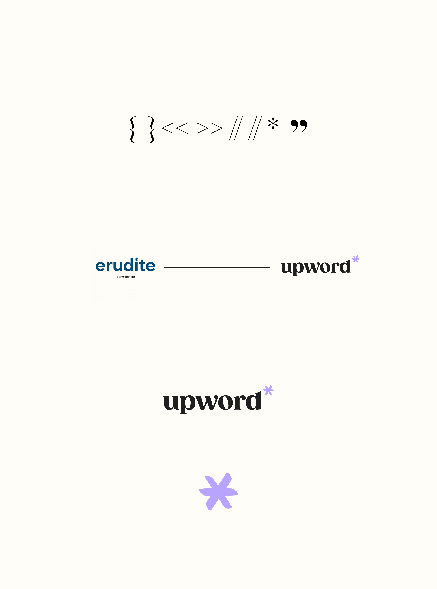
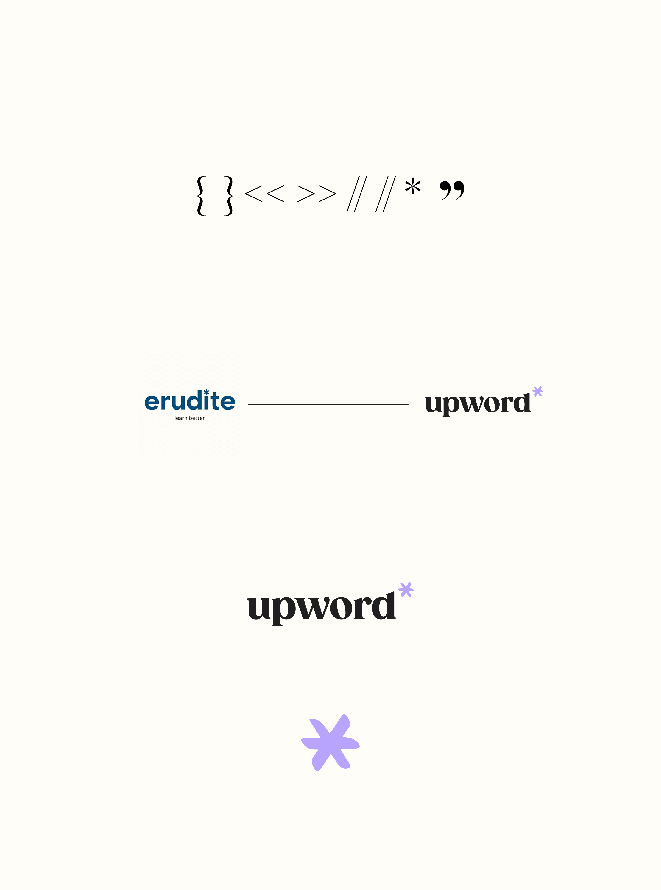
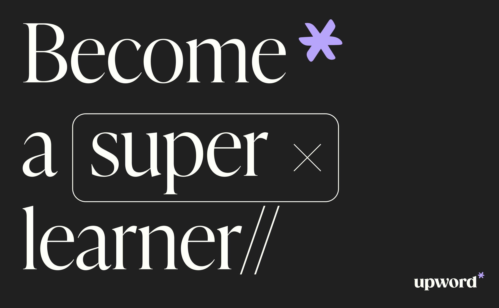
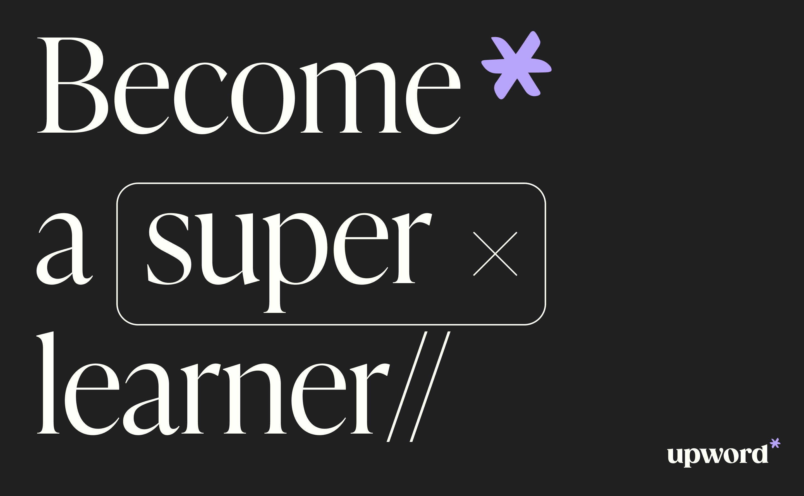
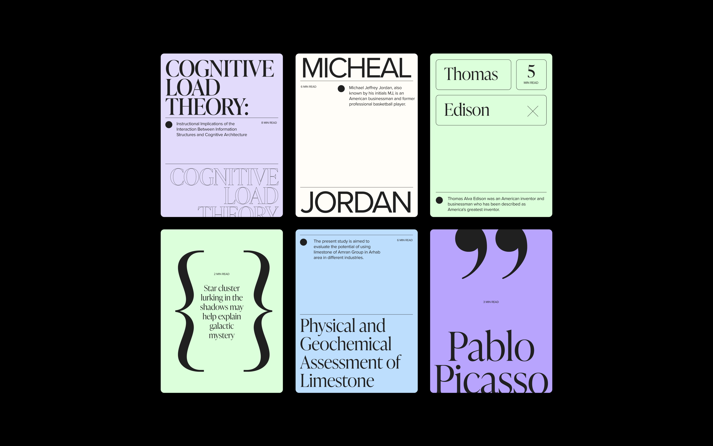
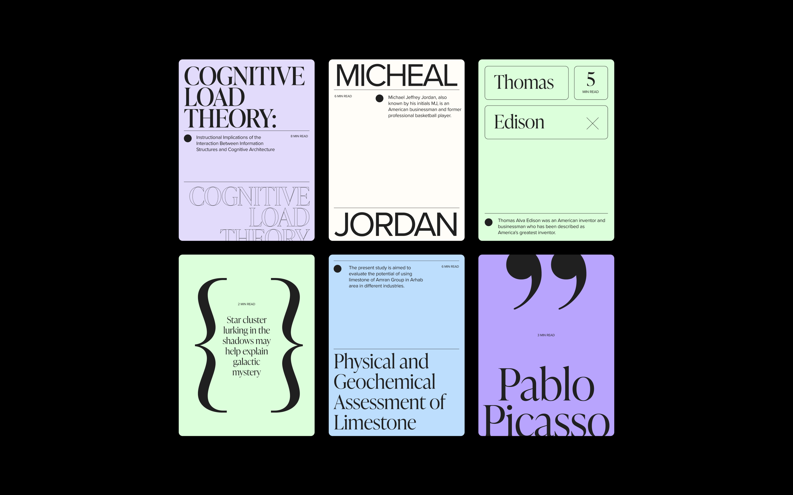
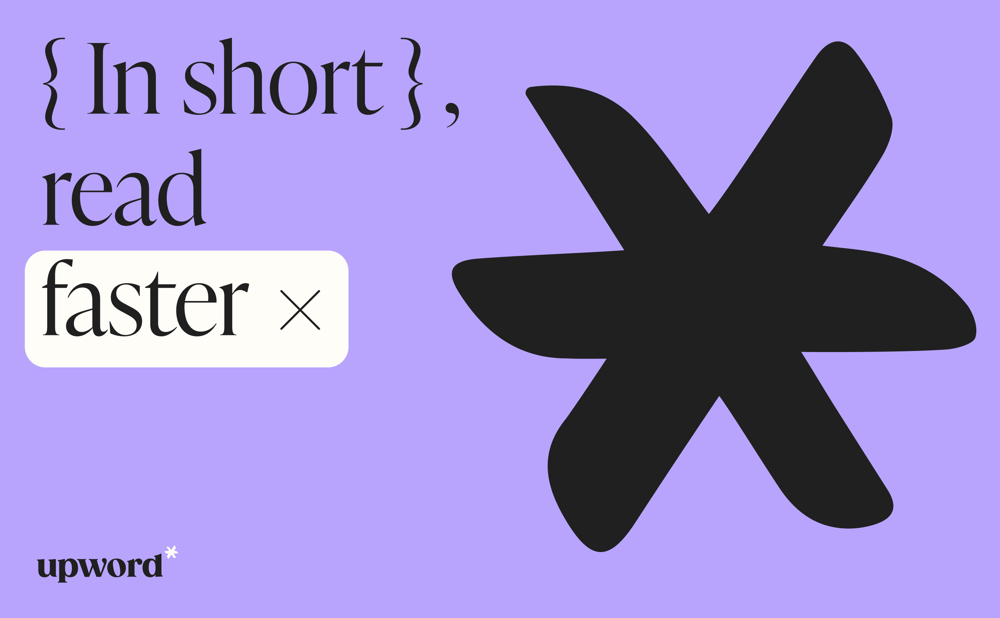
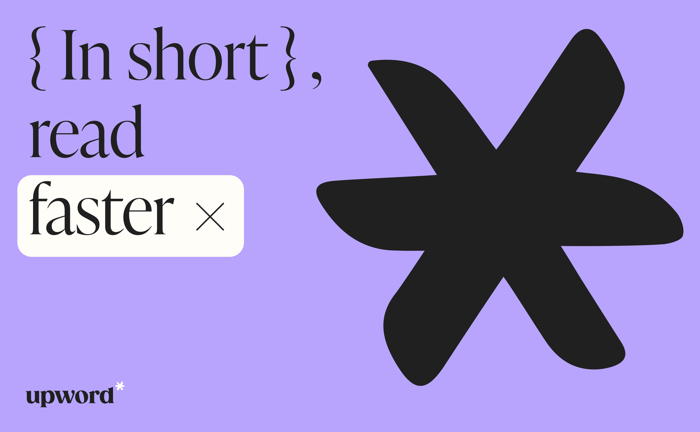

A 10-day Brand sprint for Upword
upword came to us with a fierce passion to change how we learn. they want to make education not just accessible
and effective, but inspiring, engaging, and downright magical. we knew we had to create something that bridged the
trust of academia with the endless possibilities of the digital world.
we took a simple footnote symbol and turned it into upword's central mark of distinction. a reminder of the
knowledge waiting to be unlocked.
we used elegant typography—a typeface that felt like an old, trustworthy book. it made upword credible right off
the bat.
a touch of purple, not just any color—a sprinkle of enchantment. a visual cue that learning with upword is an
extraordinary experience.
Client | Upword
Strategic |
Ori Luzia
Brand designer | Anastasia Vlasenko
UI/UX designer | Eden
Offer
 

 

 


 
